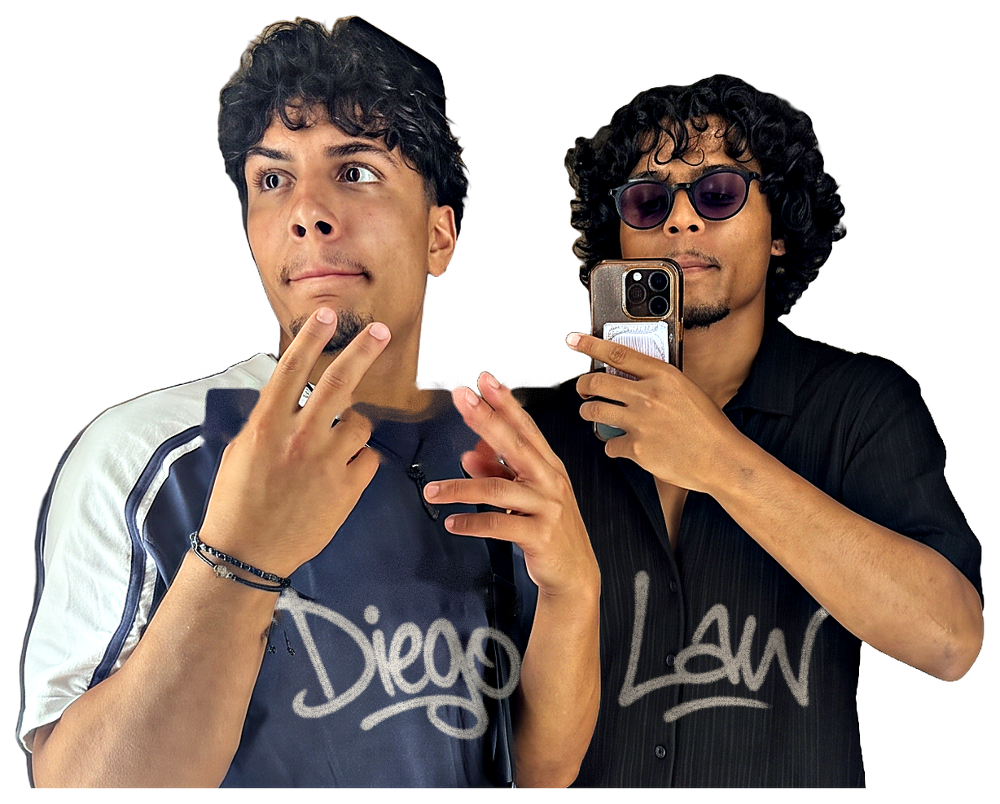
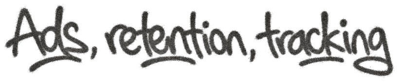

01
Content
We shoot it with you, or build from what you’ve already got. Not one polished piece a month, because for most people who see it the ad is the brand.
We make your content, run your ads and grow your social presence. Every day new people find you, and every week you see exactly how much they put in your account.
We take five clients at a time.
The work does its job the moment someone sees it. Not enough people do.
You’re a maker who has to be a marketer, and it’s the marketing that slips.
What we’re after is new people finding your work every day, buying, and coming back without us paying an ad to reach them twice. That’s growth you keep. Everything else you have to buy again next month.
The making stays yours. The selling stops being the part you dread.
First we learn the brand properly, then we set two numbers before a pound is spent: what a customer is actually worth to you, and what your sales were already doing without us.
Everything after that gets judged against both.
Four stages, in order: learn the brand and set the numbers, make the content, get it in front of people, then track it and do more of what worked. Then it goes again.
See how the Kaizen Loop works →We shoot it with you, or build from what you’ve already got. Not one polished piece a month, because for most people who see it the ad is the brand.

Run wherever your buyers actually are, not just where it’s easy. Budgets and testing handled every day, so more of the right people land on the product.

Your feed and stories, run for you. It is what convinces the people an ad sent you that you are worth buying from.

The person who already bought is the easiest sale you’ll ever make, and most brands never go back to them. We keep in touch for you, by email and message.
The real alternatives, scored on the same seven questions — including the one we lose.
Swipe the table for the other four
| KaizenEvol | You do it | A freelancer | A big agency | An in-house hire | |
|---|---|---|---|---|---|
| Someone is making new work every week | |||||
| It still happens in the weeks you are busy | |||||
| Judged against what your sales did before you started | |||||
| Content, ads, social and retention move as one thing | |||||
| You keep the account, the content and the list | |||||
| You can stop whenever you like | |||||
| There are more than two people behind it |
The last row is the honest one. A big agency has a floor of people and we have two, so if what you want is a department, hire the department. What two people buy you is that the ones making the work are the ones you talk to.
There is no account manager and no junior. The two people who make your work are the two people you talk to, and we are both behind the camera and both in the edit. Diego runs what you see; Law runs everything underneath it.


You should be making the thing. We will make people want it.
One of us makes the work, the other makes it pay. No account managers, no middlemen.
The look and the direction stay yours. We make more of what you already make and put it in front of people who have never seen you, and if a piece doesn’t look like you it’s wrong, and we’ll say so before you have to.
What else stays yours →Most of the people we talk to think they are behind. They are not posting enough, the last ads did nothing, the shop has been half-finished for a year. None of that counts against you here, because it is the job.
If you could have fixed it yourself in the evenings, you already would have.
Just the two of us. We make the work and run it ourselves, so there’s no account manager between you and the people doing it.
Five at a time is the whole capacity, not a launch offer. When they are full, they are full.
Tell us what you sell and what it costs you to make. Fifteen minutes tells us whether we can help, and if we can’t we’ll say so. Either way you’ll leave knowing what a customer is actually worth to you, which is more than most people get from a call.
Every seat gets both of us, start to finish.